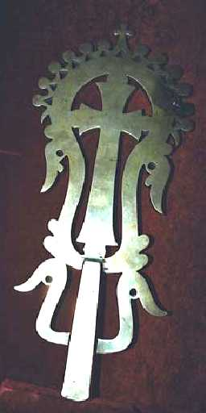
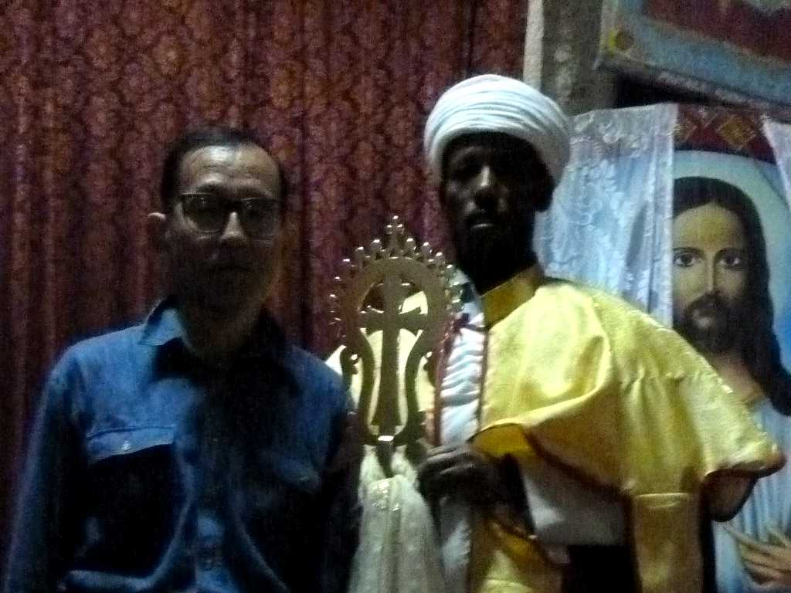
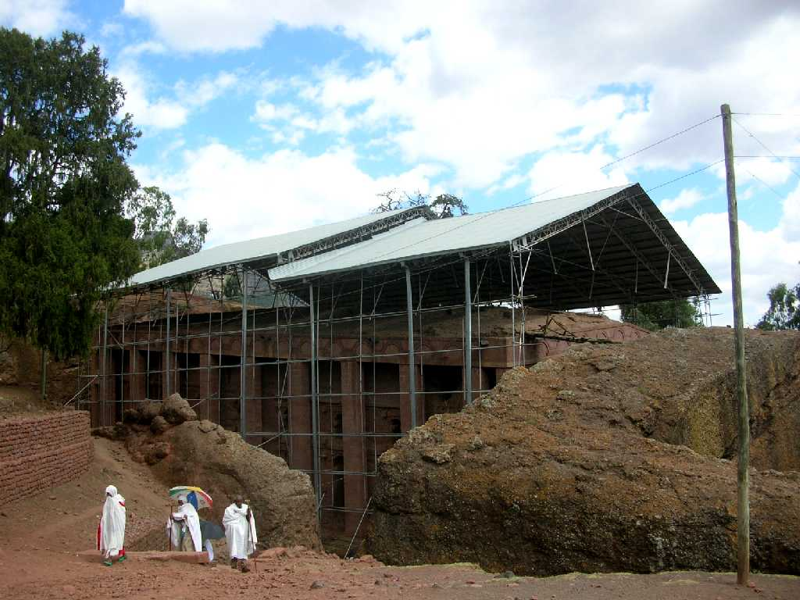

Lalibela Cross in Bet Medhane Alem
エチオピアの歴史的価値がある秘宝で ラリベラが創建された１２世紀から伝わるラリベラの十字架 ラリベラを代表する黄金の十字架で上が円を描いておりその外側に１２の円と上中央に十字架がありこれは最後の晩餐のキリストと １２使徒を表していて下の両側には鳥の羽があり天使の羽を表している

January 31 2010
前日午前に第一教会群を周ったがラリベラクロスを見るため再びマダハニアレム教会を訪れた

Bet Medhane Alem
岩を掘り抜いて創られた ラリベラで最も大きな教会で大分朽ちて補修してあるが創建当時の雄大さが伝わる